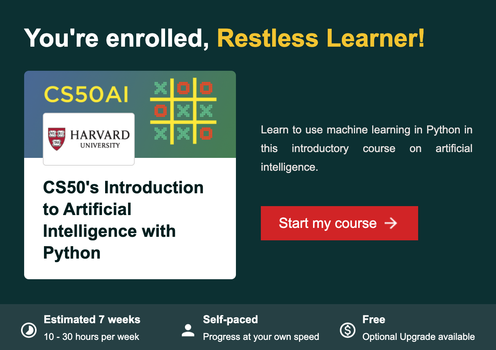
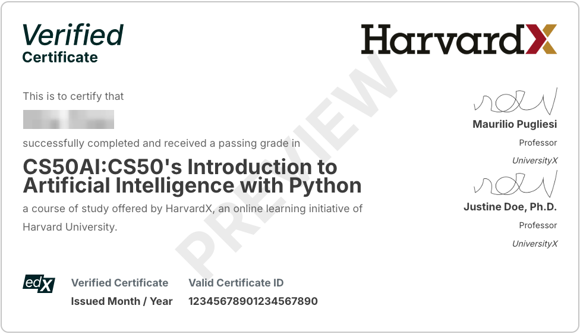

Harvard CS50AI Introduction - Learning Artificial Intelligence from Scratch
Harvard's CS50AI is an open online course that introduces the fundamentals of artificial intelligence using Python for programming and hands-on project-based learning. The course is created and taught by Harvard Professor David J. Malan and his team and is part of the popular CS50 computer science series, suitable for learners with some programming experience.
Course Overview
CS50AI's full name is CS50's Introduction to Artificial Intelligence with Python. Harvard University and online learning platform edX launched this course in 2020, with updates and revisions made in 2024.
CS50AI introduces fundamental concepts and algorithms of modern artificial intelligence, explaining the ideas behind technologies like game engines, handwriting recognition, and machine translation. Through hands-on projects, students can explore the theories behind AI topics such as graph search algorithms, classification, optimization, machine learning, and large language models, incorporating them into their Python programs. By the end of the course, students will gain experience with machine learning libraries and knowledge of AI principles, preparing them for further advanced study in AI and machine learning.
Course Website
- edX Course Page: Here, you can enroll in the latest CS50AI course for free. After enrollment, you'll have access to all course content links, timelines, and progress information.
- CS50AI Official Website: This is the course's main homepage. It contains all lectures, videos, notes and PPT slides, source code, quizzes, programming projects, and social network links for discussion groups.
The image below shows the course information and start links included in the registration confirmation email:

Course Information
The course follows a self-paced online learning format with an extended duration, allowing students to progress at their own pace. You have the flexibility to arrange your study schedule freely. Following the recommended 10-30 hours per week, it can be completed in seven weeks. If you cannot meet the recommended weekly study hours, that's fine - as long as you complete all programming projects before year-end (12/31), you've achieved the goal.
The course contains seven core units. Teaching materials include video lectures, code examples, quizzes, and a total of 12 AI hands-on projects. Each unit module includes a 1-2 hour video lecture, an online quiz, and one or two programming tasks. The quizzes are optional but very helpful in testing our understanding of basic concepts. Programming projects will further reinforce learned knowledge points and practical application abilities.
Prerequisites:
- Python basics: If you don't have Python programming experience, you can first take CS50x or the Python introductory course.
- Math fundamentals: Understanding basic linear algebra, probability theory, and logical reasoning will make it easier to understand AI-related content.
CS50-AI does not have an official designated textbook, but it provides several related learning resources. The most important is Artificial Intelligence: A Modern Approach. The 4th edition of this book is currently the most up-to-date and comprehensive introduction to AI theory and practice, unmatched in breadth and depth by other textbooks, and highly recommended.
Disclosure: This blog site is reader-supported. When you buy through the affiliate links below, as an Amazon Associate, I earn a tiny commission from qualifying purchases. Thank you.

Certification
The course is completely free, and no payment is required for learning. Upon successful completion and submission of all 12 projects, you can receive a completion certificate. As shown below, the left shows the project gradebook, and the right shows the completion certificate generated after finishing.
If you want to obtain a jointly certified certificate from Harvard/edX platform (Harvard edX verification, sample shown below) to boost career development, you can apply for an official certificate for a fee. The certification fee is currently $299. You can also find some discount codes online to save ~20% of the cost.

Course Syllabus
CS50AI course is divided into seven core units, let's briefly explain each one.
Search
The first unit module introduces search algorithms that help AI find paths from starting points to goals. The lecture covers search problem structures (including states, actions, and goals) and explores different search strategies, including Depth-First Search (DFS), Breadth-First Search (BFS), Greedy Best-First Search, and A* Search. These algorithms are demonstrated through practical examples like maze-solving, and the lecture also covers game strategies using adversarial search techniques like Minimax and Alpha-beta pruning.
Programming projects:
- Degrees (Social Network Shortest Path): Use graph search algorithm (BFS) to find the shortest collaboration path between two actors (similar to "Six Degrees of Separation"), algorithm implementation uses First-In-First-Out (FIFO) queue.
- Tic-Tac-Toe: Apply the Minimax algorithm with Alpha-beta pruning to implement an unbeatable Tic-Tac-Toe AI. This project requires installing Python pygame package.
Knowledge
This explores knowledge representation and reasoning in AI, focusing on how to encode information in a way machines can use for logical deduction. It introduces propositional logic (using symbols and logical operators like NOT, AND, and OR) and first-order logic (adding quantifiers and relations). The lecture demonstrates how to use inference rules (like modus ponens and resolution) to derive new knowledge from existing facts. It covers knowledge bases, model checking, and automated theorem proving, showing how AI systems can make logical inferences and solve puzzle games by representing knowledge as logical statements and applying systematic reasoning.
Programming projects:
- Knights (Knights/Knaves): Given a logical reasoning system that can solve puzzles, it can infer whether a character is a knight or knave based on a set of statements made by each character. The task is to determine how to represent these puzzles using propositional logic so the system can run model checking algorithms to solve them.
- Minesweeper: Knowledge-based intelligent agents consider their knowledge base when making decisions and make inferences based on this knowledge. The task is to create an AI agent that collects and analyzes board information and knowledge in the Minesweeper game to infer mine locations. This project requires installing Python pygame package.
Uncertainty
The third lecture discusses how AI systems handle uncertainty, which is a key capability when dealing with incomplete information or probabilistic outcomes. The lecture introduces probability theory fundamentals and Bayesian Networks for representing relationships between variables. It covers conditional probability, random variables, independence, and joint probability distributions. The lecture explains inference by enumeration, sampling, and likelihood weighting to calculate probabilities in complex scenarios. It also explores Markov models for event sequences and Hidden Markov Models (HMM) for inferring hidden states from observable data, demonstrating how probabilistic reasoning enables AI to make informed decisions under uncertainty.
Programming projects:
- PageRank (Web Page Ranking): Implement Google's PageRank algorithm to calculate webpage importance. Specifically apply two PageRank calculation methods - 1. Through sampling from Markov chain random surfer pages; 2. Through iterative use of the PageRank formula.
- Heredity (Genetic Probability Inference): The task is to use inference on populations using a Bayesian network model of genetic inheritance. Through given information, the AI will be able to determine the probability distribution of genes for each person, as well as the probability distribution of trait expression in tests.
Optimization
This unit module focuses on optimization techniques for finding the best solutions to complex problems. It introduces local search algorithms like hill climbing and simulated annealing, which iteratively improve solutions by exploring neighboring states. The lecture covers optimization challenges, such as getting stuck in local maxima, and explores techniques to overcome these limitations. It discusses linear programming and constraint satisfaction problems (CSPs), where CSP solutions must satisfy specific constraints. The lecture demonstrates algorithms like backtracking search, arc consistency, and the AC-3 algorithm, applying these concepts to problems like scheduling, map coloring, and Sudoku puzzles, showing how optimization algorithms can efficiently find solutions in large search spaces where exhaustive search would be impractical.
Programming projects:
- Crossword (Crossword Puzzle): Model the crossword puzzle as a CSP, where each sequence of squares is a variable, requiring completion of a solver - select a different word from the given vocabulary for each variable, satisfying all unary and binary constraints. The programming solution must implement the backtrack search and AC-3 algorithm. This project requires installing Python pillow package.
Learning
The fifth lecture introduces machine learning fundamentals, focusing on supervised learning techniques where computers learn patterns from labeled training data. The lecture covers several classification algorithms, including nearest-neighbor classification, k-nearest neighbors, perceptron learning, and support vector machines, each with its own method of creating decision boundaries. It explains regression analysis for predicting continuous values and discusses loss functions for quantifying prediction errors. The lecture also discusses important concepts like overfitting and regularization, demonstrating how to balance model complexity with generalization ability. Furthermore, the lecture introduces reinforcement learning, where agents learn optimal behaviors through reward feedback, exploring Markov decision processes and Q-learning algorithms. Finally, it touches on unsupervised learning through clustering techniques like k-means, which can identify patterns in unlabeled data.
Programming projects:
- Shopping (E-commerce Shopping Prediction): The task is to build a nearest-neighbor classifier to help websites determine user purchase intent based on relevant information. The project provides visit data for about 12,000 users from a shopping website to train the classifier.
- Nim (Nim Game): Nim is a mathematical strategy game played in turns by two players. The project requires completing an AI that applies the Q-learning algorithm from reinforcement learning, repeatedly playing against itself to eventually find the winning strategy for the game.
Neural Networks
The sixth unit explores neural networks, a computational model inspired by the biological structure of the brain. The lecture explains how artificial neural networks process information through interconnected units that combine inputs with weighted connections and activation functions (like step functions, sigmoid functions, and ReLU). It covers perceptron models for simple linear decisions and multilayer neural networks for handling complex nonlinear problems. The lecture introduces the backpropagation algorithm as a method for training these networks, through calculating errors and updating weights. It also discusses gradient descent optimization techniques, methods to prevent overfitting (like dropout), and implementation frameworks like TensorFlow. Special attention is given to convolutional neural networks for computer vision, explaining techniques like convolution, pooling, and flattening that make image processing possible. Finally, the lecture introduces recurrent neural networks as solutions for processing sequential data tasks like language translation and image captioning.
Programming projects:
- Traffic (Traffic Sign Recognition): Use TensorFlow to build a neural network that classifies road signs based on sign images. The project uses the German Traffic Sign Recognition Benchmark (GTSRB) dataset, which includes thousands of images of 43 different road signs.
Language
The seventh unit module examines natural language processing and how AI can understand and generate human language. The lecture first introduces various natural language processing tasks like automatic summarization, translation, and speech recognition, then delves into the challenges of syntax and semantics in language understanding. It covers context-free grammar and syntax trees for representing sentence structure and explores n-grams as word sequences that capture language patterns. The lecture examines tokenization methods for breaking text into meaningful units and discusses Markov models for text generation. For text classification, the lecture explains the bag-of-words model and naive Bayes classifiers, showing how AI can analyze sentiment without understanding grammar. The lecture explains word representation techniques, including distributed representations and word2vec, showing how AI captures semantic relationships between words. Finally, it introduces neural network architectures for language tasks, including recurrent neural networks with attention mechanisms and transformer models, which have revolutionized natural language processing by enabling parallel processing of language data.
Programming projects:
- Parser (Syntax Parser): The task is to write an AI to parse sentences and extract noun phrases, using context-free grammar forms to parse English sentences to determine their structure. This project requires installing Python natural language toolkit nltk.
- Attention (Attention Mechanism): The project has two tasks - 1. Write a program using the transformers Python library developed by Hugging Face to predict masked words using BERT. The program will also generate visualization attention score charts, with 144 attention heads each generating one chart; 2. Analyze the charts generated by the program to try to understand what BERT's attention heads might be paying attention to when trying to understand our natural language.
Learning Experience
I completed this online course in 2024. Overall, CS50AI stands out as an excellent introduction to AI, striking a good balance between theoretical understanding and practical implementation. Its project-driven learning approach is a highlight, reinforcing theoretical knowledge and providing practical application through 12 Python programming projects. CS50AI is particularly suitable for:
It's particularly valuable for:
- Computer science students wanting to specialize in AI
- Software developers looking to incorporate AI into their skillset
- Anyone seeking a structured, academic approach to learning AI fundamentals
Below are my personal experiences and insights on course preparation, learning progress, time management, and project completion:
Course Preparation
For those without prior programming experience, CS50AI's learning pace can be challenging. Therefore, it's strongly recommended to first quickly learn Python, reaching a level where you can comfortably read and understand simple program code and write Python application functions. The course's mathematical requirements aren't high, but if you've forgotten the basic knowledge of calculus and engineering mathematics from your first two years of college, you'll need supplementary learning. Of course, going back to college textbooks isn't practical. Many AI introductory books, including the recommended "Artificial Intelligence: A Modern Approach," provide appendices explaining mathematical foundations, which are very worth reviewing.
You can also prepare Python programming and related mathematics cheatsheets and print them for quick reference. Many ready-made cheatsheets are available online for download, or you can compile and combine what you consider most important to create customized cheatsheets.
Progress Planning
For students with rich Python programming experience and a good mathematics foundation, if you can dedicate 20+ hours per week to studying CS50AI, completing all course content and projects within a month should be feasible. If you're a working professional like me who can't study full-time, consider scheduling weekend time. If you can concentrate 6-8 hours each day on weekends for learning and programming projects, completing two units in a month is a viable progress plan. This way, the entire course can be finished within four months.
Project Experience
Tool Programs
CS50AI course is part of Harvard University's CS50 online course series. The programming projects for these courses share a set of CS50 tool programs:
- check50: A command-line program with which you can check the correctness of your programs. Learners can use check50 to test project code locally. If tests fail, you can check the logs for debugging.
- style50: a command-line tool with which you can check your code for consistency with PEP 8 - Python Style Guide.
- submit50: A command-line tool with which you can submit work. It allows multiple submissions.
Here are examples of running these tools (just replace
degreesfor different projects):1
2
3check50 ai50/projects/2024/x/degrees
style50 degrees.py
submit50 ai50/projects/2024/x/degreesWhen running the check50 tool for testing and finding errors, if you need to look into test cases for debugging, you can check the CS50AI project test code repository for actual test cases of each project. You can also find the same test files in the local
~/.local/share/check50/ai50/projects/directory, for example, the test cases for the first project Degrees are located at:1
~/.local/share/check50/ai50/projects/degrees/__init__.py
Project Programming
Before starting project programming, it's recommended to read the provided code carefully to have a full understanding of the entire program framework. Some projects can directly leverage the sample code from the lectures (downloadable from the course website).
If you get stuck debugging a project, you can seek help from CS50AI discussion groups on various social networks (Discord, Slack, etc.) or the CS50 AI Assistant. If you really can't find the clues and don't know where to start, you can reference some completed project code repositories, such as my GitHub CS50AI code repository. Even though, it's best to understand someone else's answer, organize your thoughts, and then do your own implementation. ⚠️Please don't copy code directly, as doing so makes the project practice and the entire course learning meaningless.
Project Summary
Finally, here's a comparative summary of CS50AI's 12 projects (notes provide some tips for programming implementation, for reference):
Project Name Learning Unit Technical Area & Algorithm Difficulty Notes Degrees Search Graph search (BFS), FIFO queue ★★ Use provided FIFO queue for BFS, watch for corner cases Tic-Tac-Toe Search Adversarial search, Minimax & Alpha-beta pruning ★★ Start with state evaluation, then implement Minimax recursively Knights Knowledge Propositional logic, model checking ★★ Break down complex statements into simple logical rules Minesweeper Knowledge Knowledge base, logical inference ★★★ Use recursion, carefully track safe cells and mines using sets PageRank Uncertainty Markov chain, PageRank formula iteration ★★★ Follow both random surfer and iterative formulas Heredity Uncertainty Probability distribution, Bayesian networks ★★★ Use joint probability tables, handle conditionals carefully Crossword Optimization CSP, backtracking search & AC-3 algorithm ★★★★ Implement constraint satisfaction with backtracking Shopping Learning Supervised learning, nearest neighbor classifier ★★★ Focus on feature selection and data preprocessing Nim Learning Reinforcement learning (Q-learning) ★★★ Start with basic Q-learning, implement exploration strategy Traffic Neural Networks TensorFlow, computer vision (CNN) ★★★★ Start with simple CNN architecture, then tune Parser Language Grammar parsing, rule handling ★★★ Break down into tokenization and tree building Attention Language Attention mechanism, Transformer, BERT ★★★★★ Focus on TF-IDF and query processing first
📌 Start learning CS50AI today and take your AI skills to the next level! 🚀